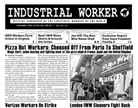

Submitted on Thu, 09/01/2011 - 1:58pm
Headlines:
- Pizza Hut Workers: Cheesed Off From Paris To Sheffield
- Verizon Workers Strike
- London IWW Cleaners Fight Back
Features:
- Review: "The Man Who Never Died"
- Interview: Capitalism & The Environment
- Report From The Gaza Freedom Flotilla II
Download a Free PDF of this issue.
Submitted on Sun, 07/03/2011 - 1:44pm
Headlines:
- London Agency Workers Fight Back & Win
- Jimmy John's Lied About Food-Borne Illness Outbreaks
- Workers get what they're owed in Atlanta
Features:
- What Wobblies can learn from “Direct Unionism”
- Industrial Worker Book Review tackles education
- National Football League and the war on labor
Downloads a free PDF Copy.
Submitted on Sat, 06/04/2011 - 1:39pm
Headlines:
- Wobblies Celebrate May Day Worldwide
- Worker-Owned Restaurant in Michigan Joins IWW
- International Solidarity with Cuban Comrades
Features:
- Obituary: Remembering Hazel Dickens
- The NEW Industrial Worker Book Review!
- Mr. Block Protests on May Day
Download a Free PDF of this issue.
Submitted on Thu, 05/05/2011 - 5:37pm
 Headlines:
Headlines:
- Six Jimmy John’s Workers Fired For Whistleblowing
- Fired Union Barista Achieves Victory In Brooklyn
- ILWU Local 10 Shuts Down Oakland Port
Features:
- The Evolution of May Day Worldwide
- Wobbly Arts: The Art of the IWW Protest Song
- Key figures from the IWW in South Africa
Download a Free PDF of this issue.
Submitted on Tue, 04/26/2011 - 11:56pm
 Headlines:
Headlines:
- It Started In Wisconsin: Labor Fights Back Across The U.S.
- Miners Protest Against Outsourcing In Western Australia
- Truck Drivers Strike In Gaza
Features:
- The Railroad Industry And The Need For One Big Union
- Wobbly Arts, Entertainment & Humor
- Review: A Deeper Look Into The Life Of Phil Ochs
Download a free PDF copy of this issue.